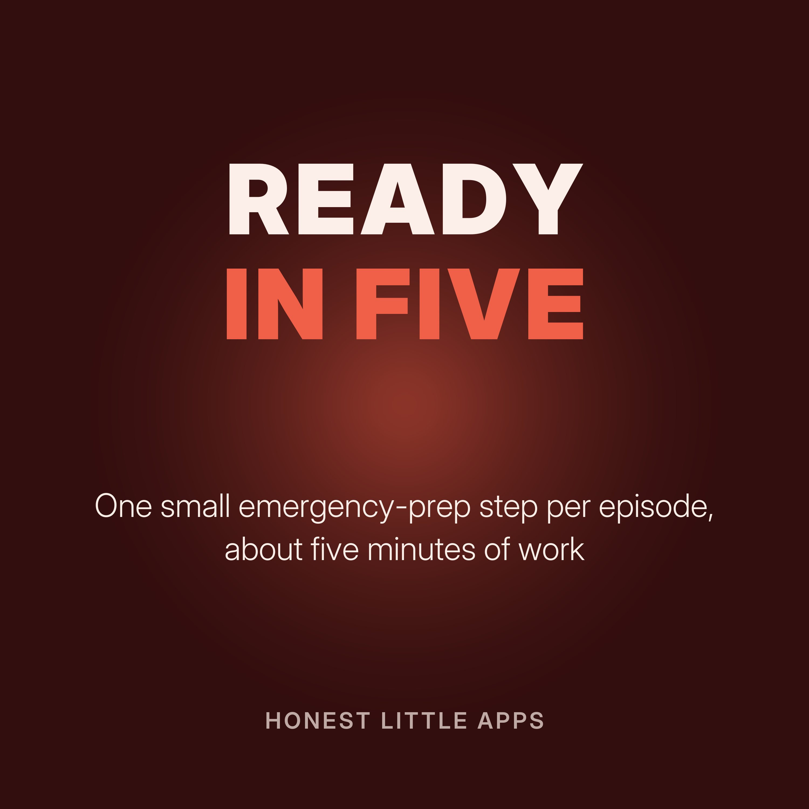

Ready in Five: One Emergency-Prep Step at a Time
Short episodes, each with one practical emergency-preparedness step you can finish in about five minutes: who to call first, an emergency card, a meeting place, a go-bag start, and more. General information; follow guidance from your local emergency services.
Made by Honest Little Apps, the makers of Family Ready: Emergency Plan, a free iPhone app with an offline Emergency Card and a practical family plan built at your own pace. Narrated with a synthetic (text-to-speech) voice.
- Who to call firstIn an emergency, nobody remembers phone numbers.
- The emergency cardIf someone needs to help you, they need key facts fast.
- Pick a meeting placeIf your family gets separated, where will you meet?
- Start a go-bag with five thingsA go-bag doesn't need to be finished in one day.
- Know how you'll hear about dangerFind out how your area sends emergency alerts.
- Plan for the people who need extra helpThink about anyone who would need extra help in an emergency: a young child, an older parent, someone with a disability, a pet.